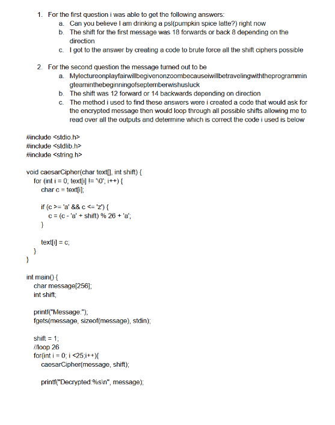

For this project we were required to use adn explain the process on how to decrypt the provided text into their corrolating messages using what we learned at that point  some of the skills i learned from completing this process were the process in which to apply affine and ceaser shift ciphers aswell as what possible situations might look like in which i might need to apply these skills